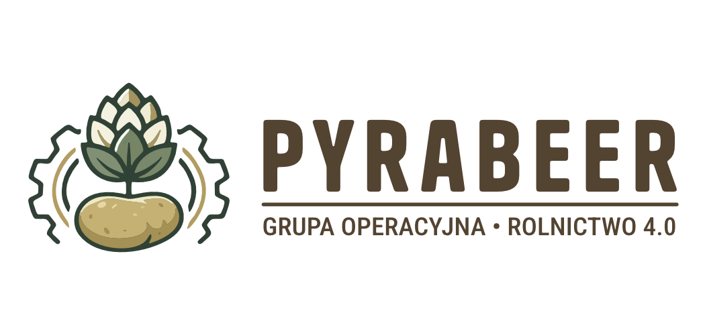
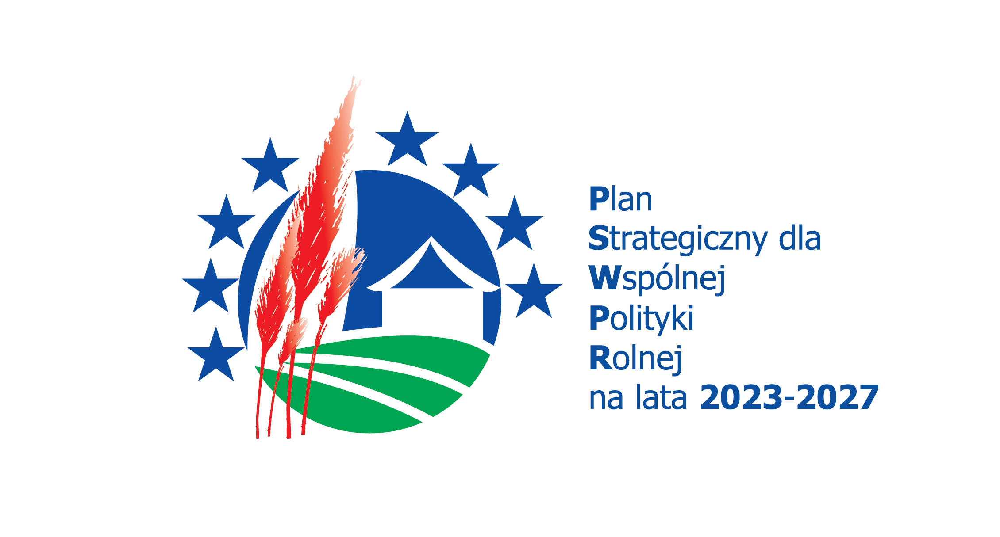
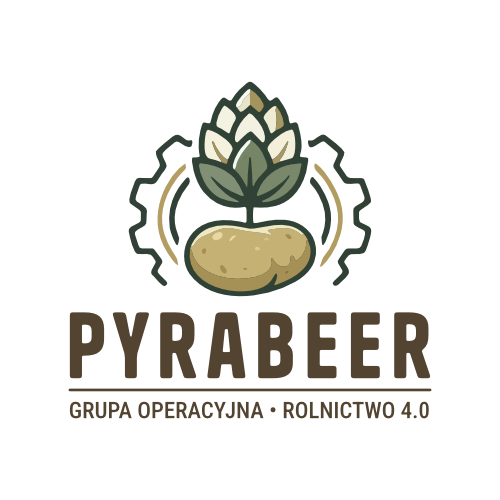
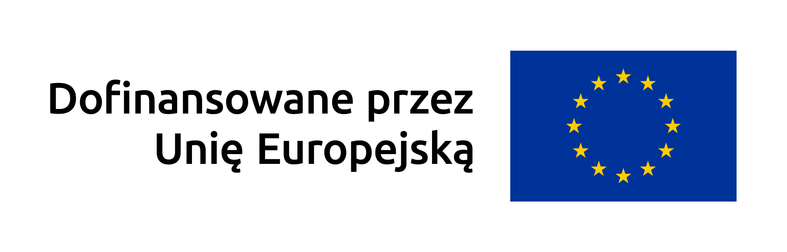
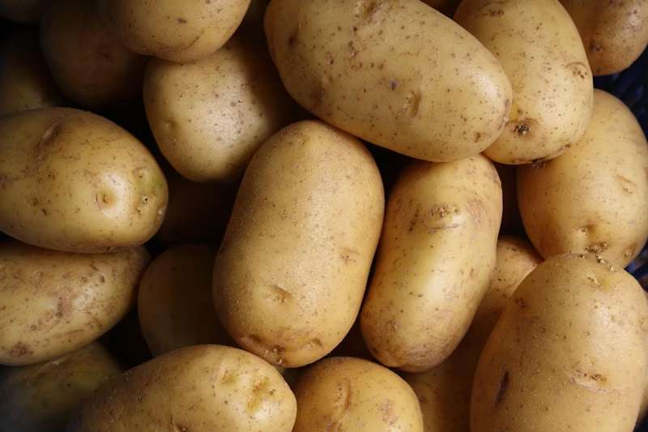
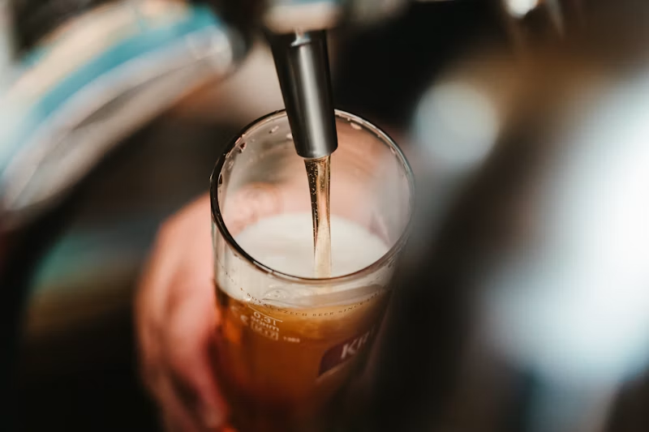

Celem operacji jest opracowanie nowego produktu o unikatowym charakterze, który będzie odpowiadał na rosnące zainteresowanie konsumentów piwami rzemieślniczymi oraz produktami opartymi na lokalnych surowcach. Projekt zakłada stworzenie koncepcji piwa wyróżniającego się na tle oferty rynkowej poprzez wykorzystanie nietypowego składnika pochodzenia rolniczego oraz podkreślenie jego regionalnego pochodzenia.
Działania realizowane w ramach operacji mają prowadzić do połączenia tradycji rolniczej z nowoczesnym podejściem do projektowania produktów spożywczych o wysokiej wartości rynkowej i wizerunkowej.
Istotą celu operacji jest także wzmocnienie tożsamości regionalnej produktu oraz wpisanie go w aktualne trendy konsumenckie, takie jak autentyczność, lokalność i rzemieślniczy charakter wytwarzania.

Fot. Surowiec rolniczy / Stock
Fot. Rzemieślniczy browar / StockZwiększenie zorientowania na rynek i konkurencyjność gospodarstw, zarówno w perspektywie krótkoterminowej, jak i długoterminowej, w tym większe ukierunkowanie na badania naukowe, technologię i cyfryzację.
Planowana operacja bezpośrednio przyczyni się do zwiększenia zorientowania gospodarstwa na rynek oraz wzmocnienia jego konkurencyjności zarówno w krótkiej, jak i długiej perspektywie. Rolnik, identyfikując problemy związane z niską opłacalnością sprzedaży ziemniaków w stanie nieprzetworzonym oraz zmiennością cen skupu, dąży do wprowadzenia innowacyjnego kierunku zagospodarowania surowca.
Współpraca z jednostką naukową umożliwi opracowanie innowacyjnej technologii przetwarzania ziemniaka, a wykorzystanie narzędzi cyfrowych w monitoringu upraw i kontroli parametrów procesu technologicznego zwiększy efektywność.
Ograniczenie marnowania żywności poprzez zagospodarowanie ziemniaków niespełniających norm handlowych, które mimo pełnej wartości technologicznej nie znajdują odbiorców na rynku konsumpcyjnym.
Zastosowanie obróbki parowej ziemniaka pod zwiększonym ciśnieniem, która skutecznie redukuje obciążenie mikrobiologiczne surowca bez konieczności stosowania dodatków chemicznych.
Operacja jest realizowana w ramach Interwencji I.13.5 „Współpraca Grup Operacyjnych EPI”, Planu Strategicznego dla Wspólnej Polityki Rolnej na lata 2023–2027, dofinansowanej przez Unię Europejską.
64-060 Wolkowo 44
Katedra Technologii Żywności Pochodzenia Roślinnego
barbara.stachowiak@up.poznan.pl
618 487 361